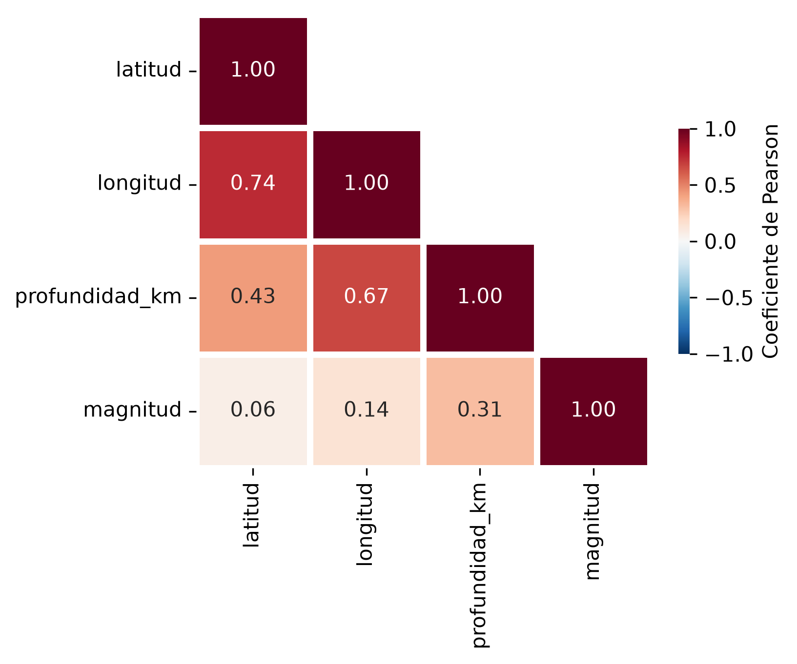
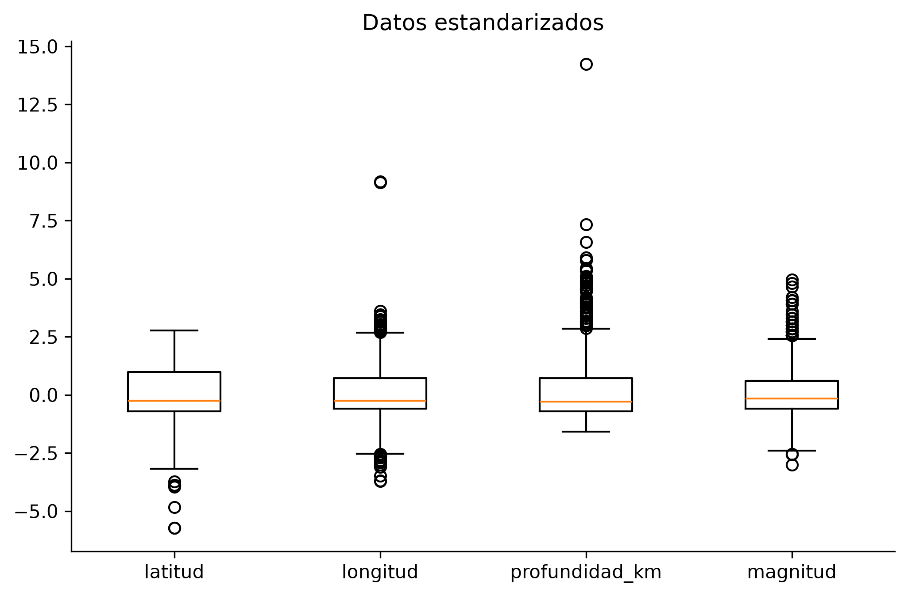
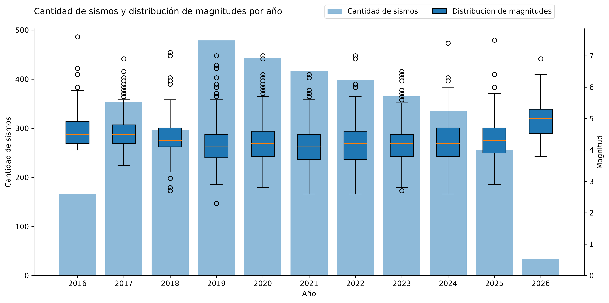
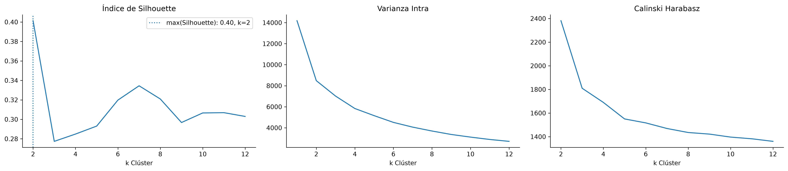
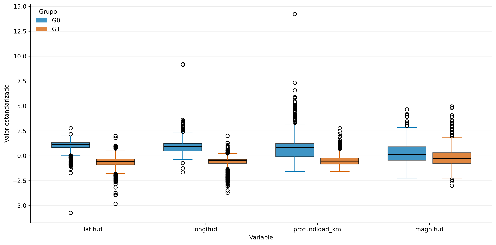
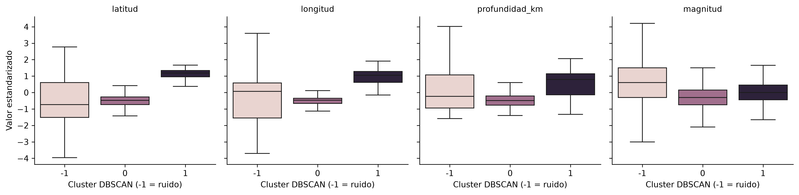
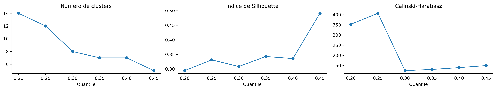
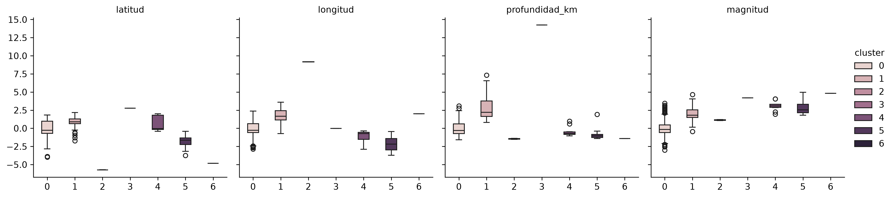
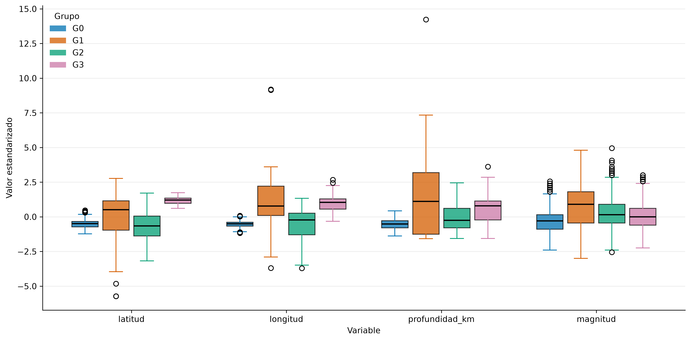
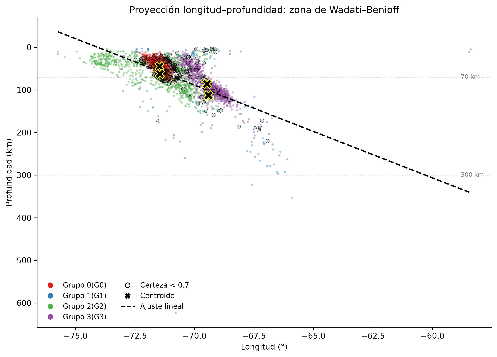

EPG4002 · APRENDIZAJE NO SUPERVISADO · PUC CHILE
Análisis No Supervisado de
Eventos Sísmicos en Chile
Comparación de cinco técnicas de clustering
Adaney Caro · Sebastián Mancilla · Nicolás. Narria · Elvis Rodriguez
Julio 2026
01 · INTRODUCCIÓNPRESENTADOR 1
¿Puede un algoritmo redescubrir las zonas sísmicas de Chile?
- Chile: convergencia de las placas de Nazca y Sudamericana — los sismos no son uniformes, se organizan en zonas sísmicas
- Pregunta: ¿puede el clustering, sin saber sismología, recuperar esas zonas usando solo coordenadas, profundidad y magnitud?
- Doble interés: evaluar técnicas sobre datos reales con respuesta conocida y contrastar los supuestos de cada método
3.546eventos sísmicos
2016–2026período · CSN
4variables: lat, lon, prof, mag
≥ 3.8magnitud mínima
02 · OBJETIVOSPRESENTADOR 1
Cinco técnicas, cinco supuestos distintos
Objetivo general
Recuperar la estructura sismotectónica de Chile sin conocimiento geofísico previo.
Criterios de selección
- Silhouette, varianza intra-cluster y Calinski-Harabasz
- AIC y BIC para GMM
- Contraste con la sismotectónica conocida
| Técnica | Supuesto clave |
|---|
| K-Means | Clusters esféricos |
| Jerárquico | Estructura anidada |
| DBSCAN | Densidad + ruido |
| Mean Shift | Modas de densidad |
| GMM | Gaussianas orientadas |
03 · DATOS Y EDAPRESENTADOR 1
La geografía ya está escrita en las correlaciones

Correlación lineal de Pearson
- Lat–Lon: r = 0.74 → refleja la línea de la costa
- Lon–Profundidad: r = 0.67 → plano inclinado de subducción
- Magnitud casi independiente (r ≤ 0.31)
- Anticipo: grupos alargados e inclinados → mala noticia para clusters esféricos
↓ distribuciones y mapa de densidad
03 · DATOS Y EDA · DISTRIBUCIONESPRESENTADOR 1
Variables estandarizadas y estabilidad temporal

Escalas dispares (prof. 0–600 km) → estandarización

250–450 sismos/año · magnitud estable en el período
03 · DATOS Y EDA · MAPAPRESENTADOR 1
Densidad espacial del catálogo
- 3.546 eventos en celdas hexagonales
- Franja angosta paralela a la costa: la traza de la fosa
- Mayor densidad en el norte y centro del país
Mapa interactivo: zoom y hover en vivo
04 · K-MEANSPRESENTADOR 2
K-Means: solo un corte norte–sur

Silhouette, varianza intra y Calinski-Harabasz, K ∈ [2,12]
K = 2máximo Silhouette (0.40)
G0 → Nortedesde Antofagasta, más profundos
G1 → Restocentro-sur, superficiales
El peak local en K=7 no se replica en los otros índices → se descarta.
↓ variables por grupo y mapa
04 · K-MEANS · GRUPOSPRESENTADOR 2
Los grupos se separan por latitud y longitud

G0 concentra valores altos en lat/lon/prof (norte, más profundos) · magnitud casi no discrimina
04 · K-MEANS · MAPAPRESENTADOR 2
Partición geográfica K = 2
- G0 (rojo): norte desde Antofagasta, incluye eventos sobre territorio boliviano y argentino
- G1 (azul): centro y sur del país
- La frontera no separa sismicidad superficial de profunda ni fosa de continente
05 · CLUSTERING JERÁRQUICOPRESENTADOR 2
Jerárquico: solo Ward sobrevive
- Enlace Simple fracasa: la nube es continua, sin saltos que detectar
- Enlace Completo fracasa: demasiados outliers
- Ward logra 2 grupos: uno pequeño en el norte (profundo) y otro con >75% de los sismos (superficiales)
0.377Silhouette — separación débil
> 75%de eventos en un solo cluster
Misma partición gruesa que K-Means: los sismos son más profundos cuanto más lejos de la costa.
↓ mapa Ward
05 · JERÁRQUICO · MAPAPRESENTADOR 2
Grupos con enlace de Ward
- Cluster pequeño: sismos del norte, cercanos a la frontera este
- Coherente con la geofísica: la placa se hunde hacia el este → sismos más profundos lejos de la costa
06 · DBSCANPRESENTADOR 3
DBSCAN: dos núcleos densos y el mérito del ruido
| Resultado | Eventos | Silh. |
|---|
| Cluster 0 | 1.680 (47%) | 0.526 |
| Cluster 1 | 1.048 (30%) | 0.442 |
| Ruido | 818 (23%) | — |
eps = 0.55 · min_samples = 50
Silhouette global 0.493 · C-H 3.225,7

Variables por cluster y ruido (-1)
Aporte clave: el 23% de ruido no es un tercer cluster — son eventos que no pertenecen densamente a ninguna concentración.
↓ mapa DBSCAN
06 · DBSCAN · MAPAPRESENTADOR 3
Concentraciones densas y ruido en los bordes
- Dos concentraciones espaciales bien diferenciadas
- El ruido aparece disperso y en los bordes de las zonas densas
- DBSCAN describe lo denso, no todo el catálogo
07 · MEAN SHIFTPRESENTADOR 3
Mean Shift: un segmentador que resultó detector de anomalías

Clusters, Silhouette y C-H por cuantil
q = 0.40bandwidth ≈ 2.14 → 7 clusters
96%de eventos en el cluster 0
1–113eventos en los 6 restantes
Se descartó q=0.45 (Silh. 0.49): valor inflado por un par de outliers aislados en su propio cluster.
↓ variables por grupo y mapa
07 · MEAN SHIFT · GRUPOSPRESENTADOR 3
Clusters minoritarios = eventos extremos

Clusters 2–6: eventos individuales con longitud, profundidad o magnitud excepcionales (los sismos más grandes del período)
07 · MEAN SHIFT · MAPAPRESENTADOR 3
Un cluster masivo, outliers dispersos
- Todas las zonas del país dominadas por el cluster 0
- Sin segmentación geográfica: funcionó como detector de anomalías, no como segmentador
- Útil como herramienta exploratoria de sismos atípicos
08 · GAUSSIAN MIXTUREPRESENTADOR 4
GMM: la geometría correcta para este problema
| K | Cov. | BIC |
|---|
| 5 | full | 24,700 |
| 4 | full | 25,348 |
| 3 | full | 26,868 |
| 5 | diag | 28,291 |
Covarianza full domina consistentemente
- Covarianza completa: única capaz de modelar grupos alargados e inclinados
- K = 4 sobre K = 5: el quinto componente fragmenta sin agregar interpretación (Baudry et al., 2010)
- G1 (n=149, σprof ≈ 105 km) absorbe los atípicos y protege a los demás componentes
↓ variables por componente y mapa
08 · GMM · COMPONENTESPRESENTADOR 4
Cuatro componentes con perfiles diferenciados

G0/G3 compactos · G1 (naranja) con dispersión de profundidad que supera a todos · magnitud = variable menos discriminante
08 · GMM · MAPAPRESENTADOR 4
Componentes ordenados de norte a sur sobre la fosa
- G3 (violeta): extremo norte, bloque compacto
- G2 (verde): el más extenso, cercano a la fosa
- G0 (rojo): núcleo central denso — se superpone a G2 en planta, los separa la profundidad (44 vs 62 km)
- G1 (azul): disperso sobre Argentina/Bolivia — recoge los atípicos, no es región sísmica
09 · VALIDACIÓN GEOFÍSICAPRESENTADOR 4
El GMM redescubre la zona de Wadati-Benioff

Proyección longitud–profundidad por componente
- Los 4 componentes se alinean sobre el plano inclinado de la placa de Nazca subductada (Cahill & Isacks, 1992)
- 93% de eventos asignados con probabilidad > 0.7
- Los casos dudosos (7%) se concentran en las fronteras entre componentes — justo donde la física predice transiciones graduales
- Un modelo estadístico sin información geofísica recuperó estructura tectónica real
10 · CONCLUSIONESPRESENTADOR 4
Cada algoritmo devuelve la estructura que sus supuestos le dejan ver
| Método | Resultado | Rol en el análisis |
|---|
| K-Means / Jerárquico | Corte norte–sur grueso | Partición base (débil) |
| DBSCAN | 2 núcleos + 23% ruido | Detectar no-pertenencia |
| Mean Shift | 1 cluster (96%) + outliers | Detector de anomalías |
| GMM (full, K=4) | Zona de Wadati-Benioff | ★ Mejor recuperación |
Con una sola técnica habríamos concluido que casi no hay estructura — lo cual sería falso.
Trabajo futuro: repetir sin magnitud · incluir eventos < 3.8 · incorporar la dimensión temporal (réplicas y enjambres)
GRACIAS
¿Preguntas?
K-MeansJerárquico
DBSCANMean Shift
GMM ★
Datos: Centro Sismológico Nacional · evtdb.csn.uchile.cl